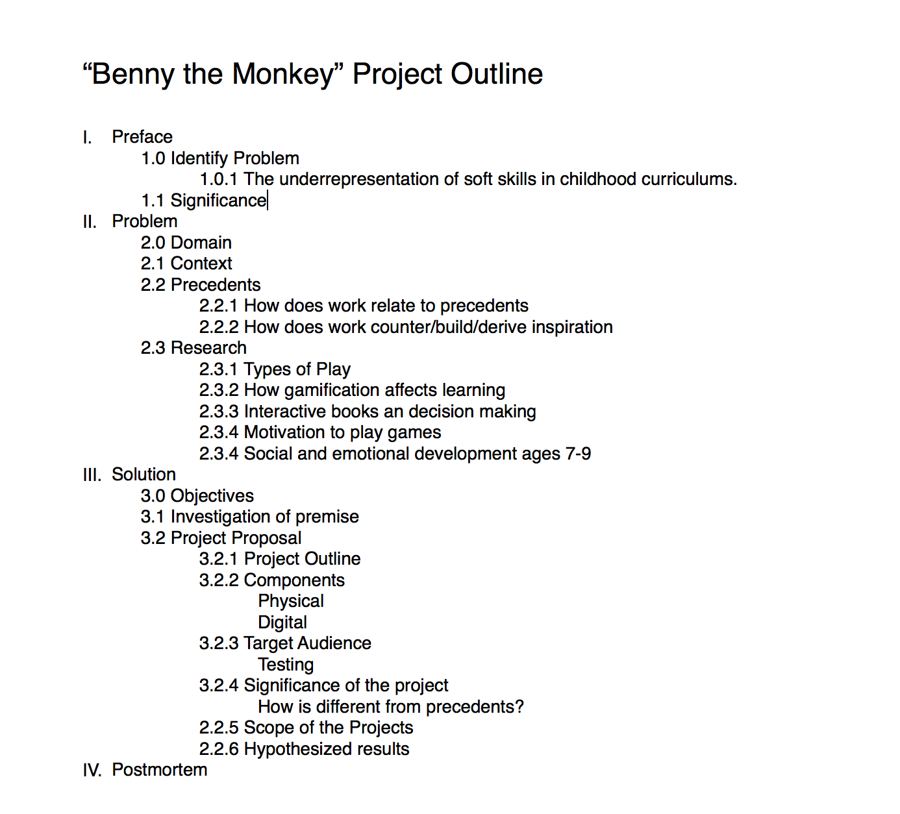
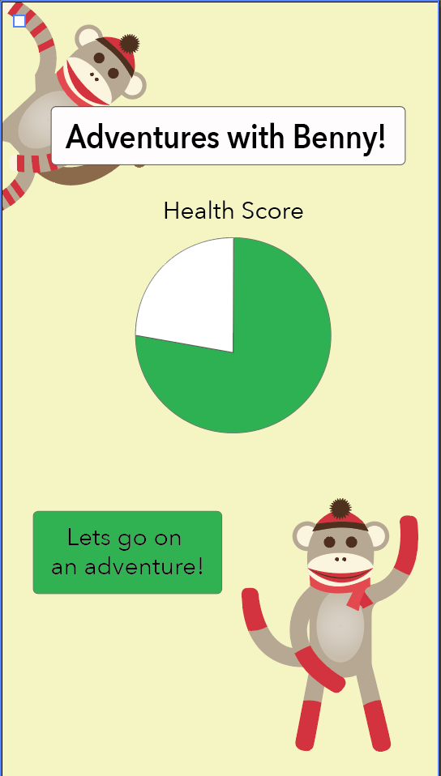

Prototype 1
I am in the early stages of designing an interactive experience to encourage positive behavior in children. Although I want to open up the design to include softs skills, not just nutrition, there were several things to consider while beginning the first prototype. A core consideration for this project is where it takes place. I wanted to find out if users are interested in interacting with it during lunchtime or at home.
Since I was not able to obtain an IRB due to time constrains, I emailed out a poll in order to get data on where children play with toys. The participants included parents, grandparents, school teachers. These participants were chosen as they are the main caregivers for children, and are observing their behavior through out the day.

The majority of children interact with their toys at home, or during transportation time. Many schools do not allow children to bring in their own toys for safety and fairness reasons. Several schools are attempting to gamify learning, and have iPads and interactive games available. A small precentage of children only interact with toys and games at school.
Criteria
One of the challenges that I am facing is creating a physical component that is small enough to be easily transported.
The physical component should feel more like a companion then a simple toy to play with, helping the user navigate through life situations.
The digital component should be kid friendly, simple and easy to use.
Physical Component
The first test I wanted to run for my physical component was color and feel. I purchased three stuffed animals, on in blue, pink, and brown. The purpose of these color selections was to choose a "boy" color, "girl" color, and "neutral" color to see which one was most attractive to users. The more neutral color of the monkey was more popular, while the abstract form of the pink toy was most popular.

While the materials were all soft, they were different types of fuzzy. The two softer toys were made of plush with different piles, or thicknesses, and the third was made from a terrycloth material. The terrycloth material was more popular. Its rougher texture made it feel "less babylike", and more hip acording to user testing. While I was not able to test on the appropriate age range, I was able to test on a variety of studnets with different backgrounds on D12.
The next step I wanted to test was the location for playing with the product. I had imagined it being a lunchbox companion, but was concercerned about the toy smelling like food and no longer being appealing. In order to test, I placed one of the stuffed animals with some leftovers inside of a zipped tote bag to simulate a lunchbox.
The bear did end up smelling like food. Upon further consideration, I was also concerned with the toy taking away childrens' time to eat and form relationships with other students. I think that the product might be more successful if the context was shifted to other downtime like waiting for pickup, car rides, and free time at home before and after school.
Digital Wireframe
While at first I had considered making a game, further game research made me question this choice. Lessons about soft skills are not necessarily given in levels, and the reward system was meant to be self satisfaction rather then points.
The important aspect of modern learning is gamification. Gamification adds game like elements to nongame situations. Gamification is proven to make lessons more enjoyable, causing higher retention rates.
When researching the gamification of learning, I found a lot of precendents in interactive story books with characters. The most basic example would come in the form of books such as Paddington Bear Book Plush Set. While the character provides no feedback, it does provide a tangible way for children to interact with the book, helping them imagine how the character would look and feel. Walter the Farting Dog is a childrens book aimed at ages 7+. When the toy is squeezed, it makes farting noises simulating the book's descriptions.
Based off these precedents, I decided to develop a story that allowed for user interaction. The player will be able to select option 1 or 2, and then be taken down another storyline.When the user makese the correct choice, they recieve positive feedback from the accompanying doll.
Prototype 1 User Testing
Prototype 1 User Testing from Roxanne Farkas
Week 2 Prototype-Aesthetics
For this week I wanted to figure out what the product would feel like - both on screen and off. In order to accomplish this I created the homepage the sketch, and began creating the physical prototype
Research Outline
I outlined my reserach paper to figure out what I was going to be focusing on solving. I found that it was very helpful in determining what areas to research. It was important that I began researching before designing, so that I could design with the user in mind.
After establishing my prelimary outline, I began to fill it in with research that I had collected, and to use it to think through my design process.
Physical Component
Due to the results of my user tsting in week 1, I decided to go with a neutral colored stuffed animal to ensure gender neutrality. Sock monkeys share the texture of pink toy from week 1, and also are a more adult version of a stuffed animal.
In order to provide physical feedback when succcess is had on the application, I used littleBits.
First I worked on the basic functionality of littleBits. Little works in a very similar way to the arduino, and even has their own arduino board. The benefit to littleBits is that they are magnetic, so there is not soddering involved. Because none of the wires are exposed, they are safe for children, which is a very important component of creating a children's toy.
Next I connected the hardwear to the sock monkey. I wanted to make sure that the feedback was strong enough to be felt through the animal. The vibration was strong, and it felt positive, not threatening or scary.
Lastly I connected a second feedback, or a light. More feedback is generally more encouraging, so having the toy light up and vibrate will be more exciting to the users.
After completing these iterations, I want to experiment with having an input. When the sock monkey is squeezed, perhaps it will provide feedback on the screen. THe purpose of this is to increase the interaction between the users and the different components.
Digital Component
I started with a layout including the basic components I would need. Benny the monkey should be visible so that the toy can be related to the app. An overall health pie chart is included to motivate users to play. When they have played enough games, the health chart will be at 100%.
To situate the type of adventures that Benny would be taking, I added a background that was realistic, but also different then the average daily life of the users. This was done in order to help foster imaginative play.

After completing the second iteration I sent the image to several friends. After recieving their feedback, I completed a third iteration of the homepage. I made stylistic changes in order to make the homepage more visually appealing.